01
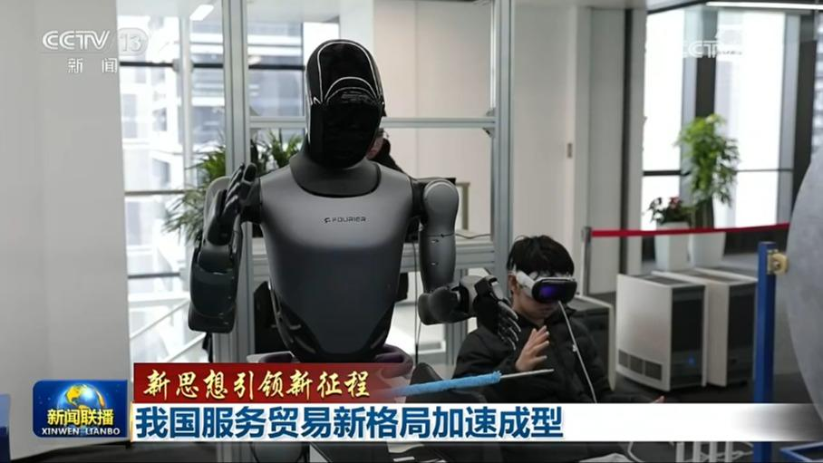
【新思想引领新征程】我国服务贸易新格局加速成型
习近平总书记强调，要主动扩大优质服务进口，鼓励扩大知识密集型服务出口，以中国大市场机遇为世界提供新的发展动力，以高质量发展为全球提供更多更好的中国服务。作为全球服务贸易第二大国，我国服务贸易创新发展不断推进，开放程度更高、结构更优、动力更足的服务贸易新格局正加速成型。
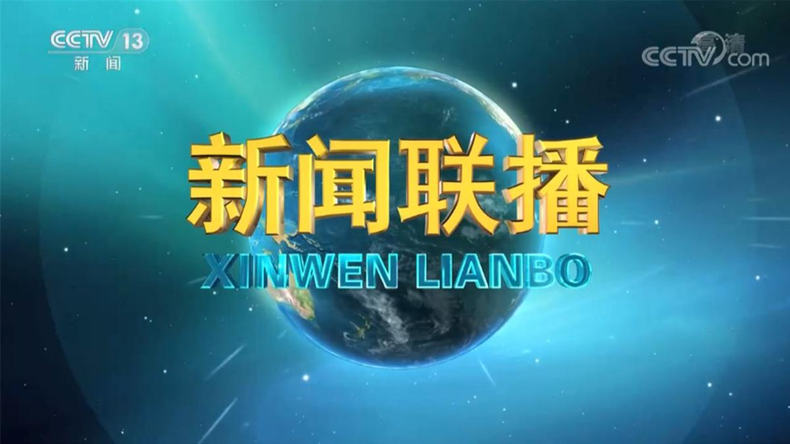

习近平总书记强调，要主动扩大优质服务进口，鼓励扩大知识密集型服务出口，以中国大市场机遇为世界提供新的发展动力，以高质量发展为全球提供更多更好的中国服务。作为全球服务贸易第二大国，我国服务贸易创新发展不断推进，开放程度更高、结构更优、动力更足的服务贸易新格局正加速成型。
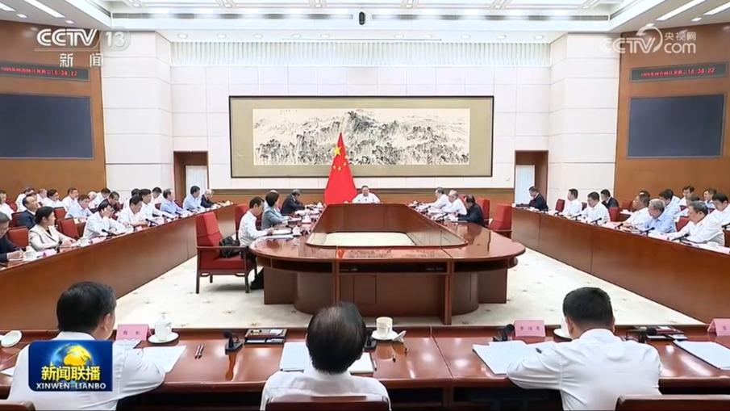
9月8日，国务院以“高质量推进城市更新、促进城市内涵式发展”为主题，进行第二十一次专题学习。国务院总理李强在主持学习时强调，要深入学习贯彻习近平总书记关于城市更新工作的重要指示精神和党中央有关决策部署，建立可持续的城市更新模式，促进城市结构优化、功能完善、文脉赓续、品质提升，以城市高质量发展更好满足人民美好生活需要。
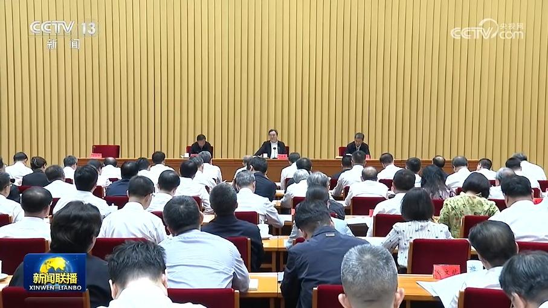
全国教材工作会议9月8日在京召开。中共中央政治局常委、国务院副总理丁薛祥出席会议并讲话。
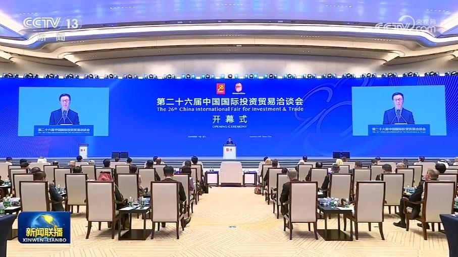
国家副主席韩正8日上午在福建厦门出席第二十六届中国国际投资贸易洽谈会开幕式并致辞。
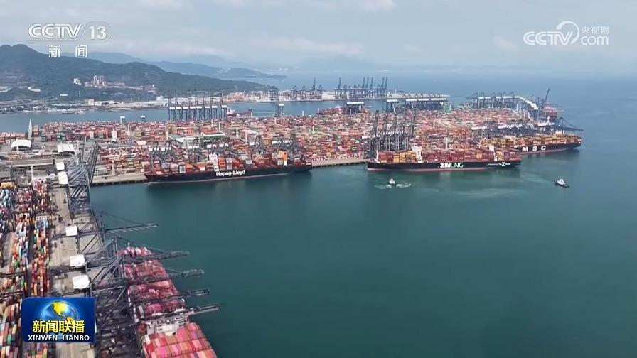
海关总署今天（9月8日）对外公布，今年前8个月，我国货物贸易进出口同比增长17.6%，外贸运行延续两位数快速增长态势。
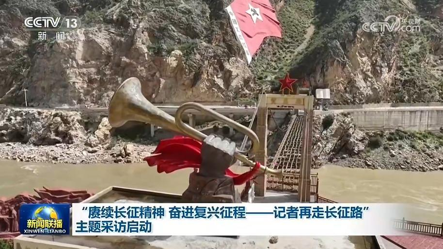
今年是中国工农红军长征胜利90周年。由中央宣传部组织开展的“赓续长征精神 奋进复兴征程——记者再走长征路”主题采访今天（9月8日）在江西于都启动。
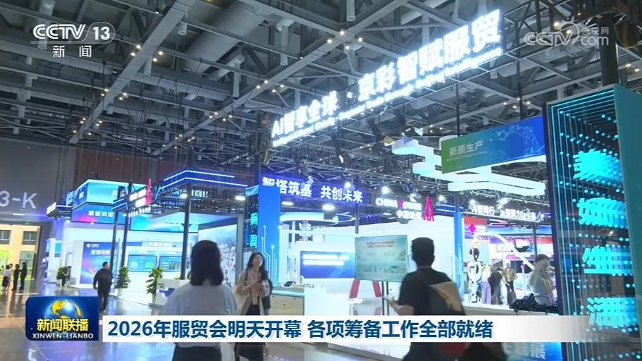
2026年中国国际服务贸易交易会将于明天（9月9日）在北京开幕，目前各项筹备工作已全部就绪。
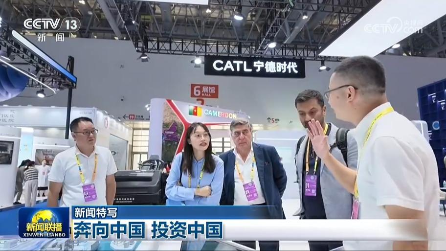
今年投洽会，来自世界各地的投资者奔赴中国，一场展会，透射出“投资中国”的全球吸引力，也给世界带来中国高质量发展蕴藏的广阔机遇。
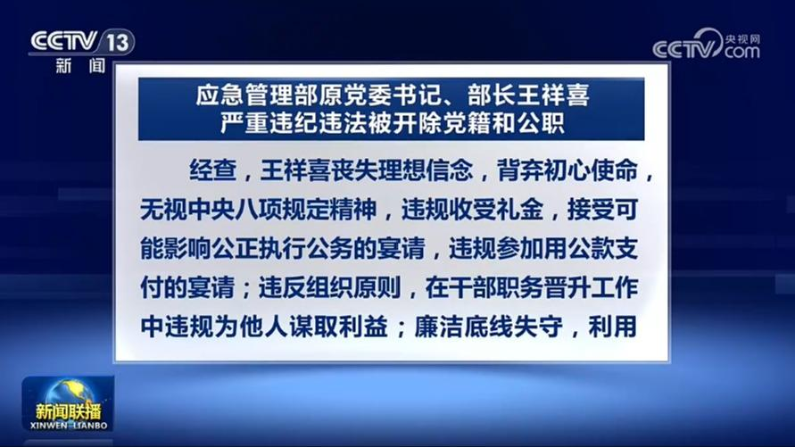
经中共中央批准，中央纪委国家监委对第二十届中央委员，应急管理部原党委书记、部长王祥喜严重违纪违法问题进行了立案审查调查。
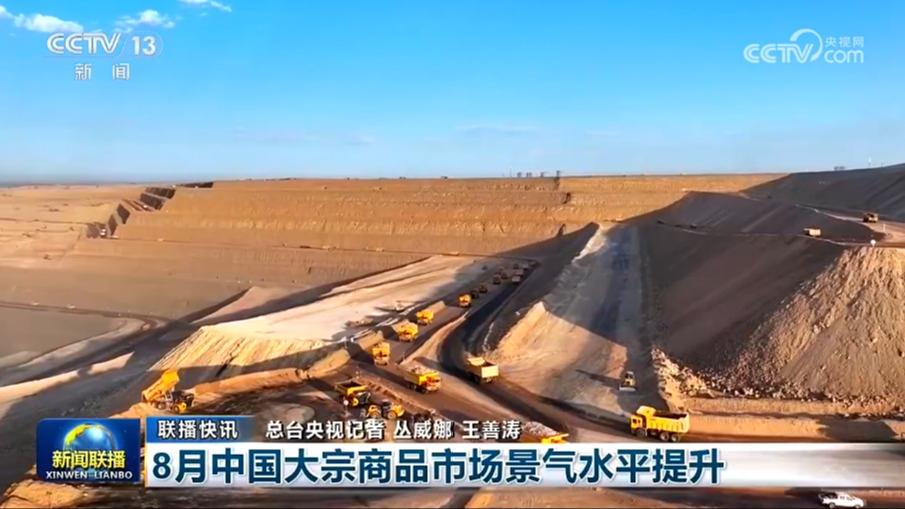
8月中国大宗商品市场景气水平提升
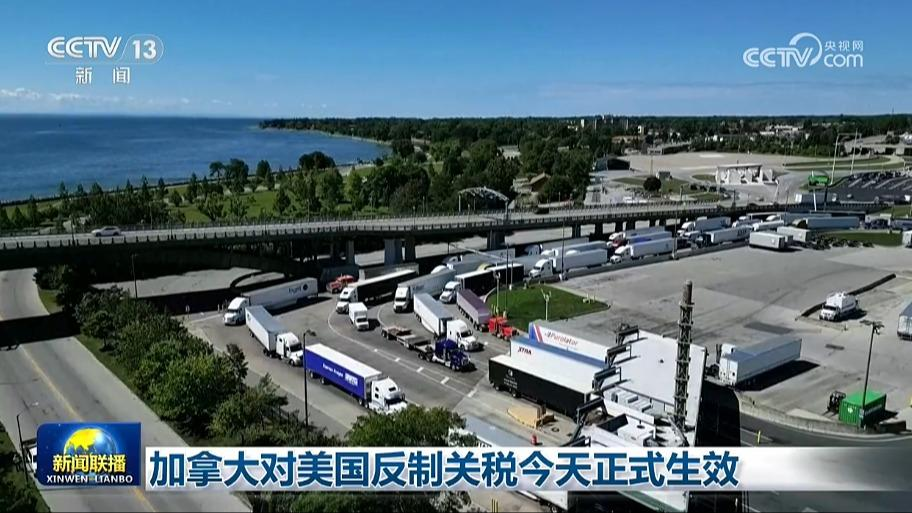
作为对美国加征关税的反制措施，加拿大对价值约200亿美元的美国进口商品征收的等额关税今天（9月8日）正式生效。根据加拿大财政部公布的清单，此次反制关税主要集中在钢铝、乳制品、家电、农业设备等领域。加拿大总理卡尼7日表示，面对来自美国“毫无道理且毫无根据的关税”，加拿大政府将保护工人与企业，拓展多元市场。此前，美国已宣布于8月22日起对约200亿美元的加拿大进口商品征收50%关税。
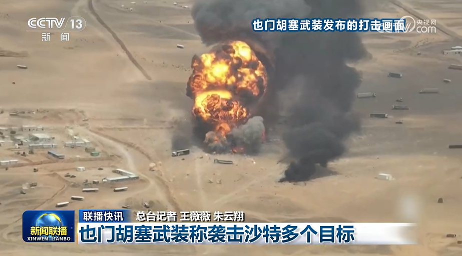
俄称对乌首都等地发动大规模打击